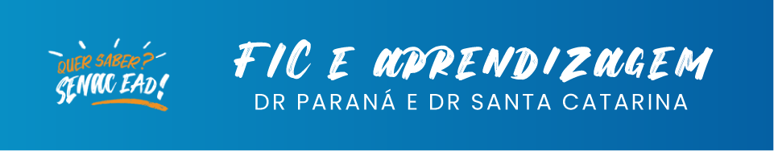

As capacitações sobre a oferta de cursos FIC são desenvolvidas e ofertadas pelos departamentos regionais-sede (DRs-sede) do Senac PR e do Senac SC. Caberá a cada DR-polo multiplicar as informações e capacitar os polos sob sua gestão.
As capacitações são realizadas por meio de webconferências, e outras informações adicionais são comunicadas por e-mail ou telefone.
Os cursos de aprendizagem seguem as seguintes legislações:
Não. Para os demais cursos FIC oferecidos pelo Portal da Rede Nacional de Educação a Distância Senac, não existe uma legislação específica reguladora, o que permite que sejam ofertados como cursos livres.
Essas perguntas e respostas cobrem as principais informações relacionadas ao funcionamento das equipes e à legislação vigente para os cursos oferecidos pelo Senac.
Os cursos FIC são ofertados no Portal EAD com matrículas isoladas e turmas contínuas. Os alunos podem se matricular e começar os estudos em qualquer período do ano, após a liberação do acesso. Nos cursos com carga horária a partir de 160 horas, há formação de turmas com o mínimo de cinco alunos para início.
Os alunos se inscrevem por meio do Portal da Rede Nacional de Educação a Distância Senac e recebem informações sobre o início do curso por e-mail, de acordo com o cronograma da turma.
As turmas de aprendizagem podem ser formadas pelo Programa Senac de Gratuidade (PSG) ou pela modalidade de varejo. Cada departamento regional-polo pode escolher a forma de atendimento que mais se adequa à sua realidade.
As turmas PSG são disponibilizadas nos meses de março, junho, setembro e dezembro, com no máximo 50 aprendizes por turma. Se houver demanda, mais turmas podem ser abertas. Caso um departamento regional-polo tenha uma demanda mínima de 25 alunos, pode ser solicitada a abertura de uma turma exclusiva.
O departamento regional-polo deve enviar um e-mail ou ofício ao departamento regional-sede solicitando a abertura de uma turma PSG exclusiva, respeitando o prazo de 60 dias para o processo de matrícula dos jovens.
Para atender a essas demandas, o departamento regional-polo deve entrar em contato diretamente com a Escola EAD/PR, que cuidará dos encaminhamentos necessários para a formação de turmas exclusivas ou personalizadas.
Anualmente é realizada consulta aos DRs-polo sobre o interesse em disponibilizar carga horária PSG para a oferta EAD. O departamento regional interessado deve então informar, via ofício, a quantidade de horas e os títulos dos cursos desejados.
Sim. Ao longo do ano, o departamento regional-polo pode se manifestar via ofício ao departamento regional-sede com a quantidade de horas e os títulos dos cursos desejados, conforme consulta já realizada.
Sim. No Departamento Regional do Paraná (DR-PR), cada turma PSG pode comportar até 50 aprendizes. Se esse número for atingido, mais turmas podem ser abertas para atender à demanda dos DRs-polo.
Em turmas comerciais e Programa Senac de Gratuidade (PSG), após a matrícula, os alunos são informados sobre o início do curso via e-mail.
No caso das turmas de aprendizagem, a comunicação segue o planejamento acordado entre o departamento regional-sede e os departamentos regionais-polo.
A data de início de uma turma exclusiva do PSG é acordada com a empresa parceira e deve ser solicitada com, no mínimo, 60 dias de antecedência para garantir o tempo adequado ao processo de matrícula.
Para a abertura de turmas exclusivas, é necessário que haja uma demanda mínima de 25 alunos. Se esse número não for atingido, o departamento regional-polo deve buscar alternativas dentro do planejamento geral de turmas.
O DR-PR é responsável por oferecer opções de formação de turmas de aprendizagem (Programa Senac de Gratuidade e varejo), e cada DR-polo define a forma de atendimento mais adequada. Além disso, o DR-PR pode abrir turmas conforme a demanda e gerenciar a abertura de turmas exclusivas.
O departamento regional-polo deve enviar um e-mail ou ofício ao departamento regional-sede para solicitar a abertura de turmas exclusivas, respeitando o prazo mínimo de 60 dias de antecedência, para garantir o tempo adequado ao processo de matrícula.
Para se inscrever nos cursos FIC, o interessado deve acessar o Portal Rede Nacional de Educação a Distância Senac e preencher a ficha de pré-matrícula. Após o pagamento, o aluno receberá as orientações sobre o início dos estudos. Não é necessário encaminhar documentos físicos.
Sim. O Departamento Regional de Santa Catarina oferece a opção de compra de combo de cursos FIC no Portal. Há combos para pessoa física e pessoa jurídica. O aluno ou a empresa pode escolher entre os pacotes de cursos disponíveis e, após a matrícula, terá um prazo determinado para concluir os estudos.
Os pagamentos podem ser feitos à vista, via boleto e por PIX ou podem ser parcelados no cartão de crédito. Os clientes pessoa jurídica que optam por adquirir combo de cursos FIC com a forma de pagamento boleto deverão entrar em contato com o departamento regional-sede – Núcleo de Relações com o Mercado (nrmead@sc.senac.br) e solicitar o boleto e a nota fiscal.
As turmas de aprendizagem PSG são cadastradas no Sistema de Gestão Acadêmica pelo Departamento Regional do Paraná e disponibilizadas no Portal. Empresas interessadas podem acessar o Portal e verificar a lista de cursos de aprendizagem para encontrar o mais adequado às suas necessidades. O processo de cadastro da empresa é feito on-line, e, após o preenchimento dos dados, a solicitação fica registrada na Extranet para análise do departamento regional-polo.
A documentação inclui:
O departamento regional-polo (DR-polo) é o responsável e responde pela documentação dos jovens. Deve realizar a conferência e atualizar o status na Extranet. Caso haja inconsistências, o DR-sede notifica o DR-polo para regularização. A documentação é arquivada pelo DR-polo e, após conferência, a matrícula é efetivada no sistema.
As empresas devem acessar o Portal Rede Nacional de Educação a Distância Senac, verificar os cursos disponíveis e clicar em Cadastre sua empresa. Após o cadastro, as solicitações são visualizadas pelo departamento regional-polo, que faz o contato e realiza a negociação.
Para turmas de varejo, o departamento regional-polo negocia diretamente com as empresas e confirma a disponibilidade de turmas junto ao departamento regional-sede. O processo de pré-matrícula dos alunos é idêntico ao das turmas Programa Senac de Gratuidade (PSG), com a inclusão de um termo de aceite e um contrato de prestação de serviços.
Nos cursos Programa Senac de Gratuidade (PSG), a cobrança é feita via aviso de lançamento (AL), postado na Extranet. Nos cursos de varejo, a cobrança é feita via nota fiscal de serviços eletrônica e boleto bancário, enviados até o dia 10 do mês subsequente ao mês da prestação de serviço.
Nos cursos FIC, o contrato é disponibilizado eletronicamente para o aluno. Já nos cursos de aprendizagem, a assinatura do contrato depende do termo de compromisso da empresa parceira e do acordo de cooperação com o departamento regional-polo.
A contabilização da produção nos cursos FIC é regulamentada pelo Departamento Nacional, e a apuração é baseada na carga horária por aluno (CH/aluno), considerando o Código de Endereçamento Postal (CEP) do aluno. Toda a produção é direcionada para os Departamentos Regionais de Santa Catarina (DR-SC) e do Paraná (DR-PR).
O repasse financeiro dos cursos FIC entre os DRs-polo e os DRs-SC e PR é realizado mensalmente. Esse repasse é calculado com base nos valores recebidos via boleto e parcelas de cartão de crédito. O percentual de repasse é de 30% para os cursos FIC e 20% para os cursos de idiomas e games.
Nos cursos do PSG, o departamento regional-sede emite um aviso de lançamento com base no número de alunos e na carga horária ofertada no mês, multiplicados pelo valor vigente do PSG por hora/aula/aluno. O valor é então publicado no site da Extranet Nacional para download.
O valor do repasse referente à venda dos cursos de aprendizagem ou Programa Senac de Gratuidade (PSG) deve ser pago ao DR credor no mês subsequente à execução dos serviços. O pagamento ao departamento regional-sede deve ocorrer até o dia 25 (ou no dia útil seguinte) do mês subsequente à execução dos serviços.
A base de cálculo para o percentual de repasse inclui o valor da liquidação do título, o percentual de repasse, a multa e a correção por atraso, além de possíveis abatimentos em razão de descontos ou cancelamentos.
O pagamento do percentual de repasse é realizado por meio de crédito na conta-corrente do departamento regional-polo. Relatórios detalhados sobre o valor creditado são disponibilizados na Extranet.
Os DRs-sede têm o compromisso de manter esforços contínuos para garantir a permanência dos alunos nos cursos, por meio de ações coordenadas pelas equipes de gestão, tutoria, monitoria, suporte e comercial. Essas ações têm como objetivo reter os alunos e divulgar os resultados positivos dos cursos a distância do Senac.
O aluno que desejar desistir de um curso FIC deve manifestar sua intenção por e-mail. Ele pode desistir no prazo de até sete dias após a efetivação da matrícula, desde que não tenha acessado o ambiente virtual de aprendizagem (AVA). A solicitação deve ser enviada para os e-mails financeiroead@sc.senac.br e vendasonline@pr.senac.br.
O Senac pode cancelar uma matrícula no prazo de até sete dias após a efetivação, comunicando o aluno por e-mail ou pela internet. As razões podem incluir número insuficiente de pré-matriculados ou outras justificativas relevantes.
Para desistência nos cursos de aprendizagem, o aluno deve manifestar sua intenção à empresa por meio de um formulário de solicitação de desligamento. A empresa encaminhará o documento assinado ao departamento regional-sede (DR-sede), com cópia para o DR-polo. Se o aluno for menor de 18 anos, o responsável legal também deve assinar o documento. Após a quitação das verbas rescisórias, a empresa deve enviar a cópia do termo de rescisão ao DR-sede e ao DR-polo.
Não. Nos cursos FIC e de aprendizagem, não há a possibilidade de transferência de alunos.
O Senac adota um modelo pedagógico centrado no desenvolvimento de competências, com o objetivo de formar profissionais preparados para os desafios do mercado de trabalho. A metodologia inclui projetos integradores que articulam as competências de cada curso, garantindo uma formação técnica, crítica e empreendedora.
O desenvolvimento dos cursos envolve equipes interdisciplinares compostas de conteudistas, pedagogos, designers instrucionais, designers gráficos, programadores, revisores e ilustradores. Essas equipes, sob coordenação dos DRs-sede, atuam desde a definição das diretrizes até a produção do material didático.
Nos cursos de aprendizagem, o coordenador de polo é responsável por divulgar o programa, atender solicitações das empresas parceiras e gerenciar a documentação dos alunos e das empresas. Ele também seleciona e acompanha tutores presenciais e participa dos fóruns de aprendizagem.
A tutoria pode ser reativa ou ativa, dependendo do curso e do departamento regional responsável. Nos cursos com tutoria reativa, os alunos postam dúvidas no fórum e recebem respostas em até 24 a 48 horas úteis. Nos cursos com tutoria ativa, o tutor acompanha e estimula o processo de aprendizagem de forma contínua, promovendo atividades colaborativas e reflexivas.
Nos cursos FIC, os monitores acompanham o acesso dos alunos e entram em contato em caso de ausência. Eles também informam os tutores sobre as dificuldades relatadas pelos alunos no fórum do curso, auxiliando no acompanhamento do processo de aprendizagem.
Nos cursos FIC, não há momentos presenciais. Já nos cursos de aprendizagem, há previsão de encontros presenciais e de supervisão da prática profissional. Além disso, são realizados encontros virtuais (webconferências) para orientação de supervisores e jovens aprendizes.
O Senac utiliza atualmente a plataforma Blackboard como ambiente virtual de aprendizagem (AVA).
A avaliação no Senac é contínua e focada no aluno, utilizando diversas ferramentas, como fóruns, simuladores e projetos integradores, para garantir o desenvolvimento das competências previstas no curso. Nos cursos de aprendizagem, a tutoria emite feedbacks com base em indicadores de competência.
As ações de recuperação são contínuas e podem ser implementadas ao longo de todo o processo de aprendizagem, conforme a necessidade identificada pelo docente ou já prevista no curso, no caso de ofertas autoinstrucionais. Elas não são limitadas ao final de uma unidade curricular ou semestre.
Nos cursos FIC e de aprendizagem, os certificados são disponibilizados em formato eletrônico no e-mail cadastrado pelo aluno no Portal EAD Senac e podem ser impressos.
No Senac PR, os responsáveis pelos serviços administrativos de acordo com suas áreas são:
No Senac SC, os responsáveis pelos serviços administrativos em suas respectivas áreas são:
Senac SC: os alunos podem entrar em contato com o suporte técnico pelo telefone 0800-648-6481, disponível diariamente das 8h às 18h (exceto aos sábados, domingos e feriados), ou pelo e-mail suporteead@sc.senac.br. Também é possível utilizar o serviço Fale conosco pelo site http://www.ead.senac.br/fale-conosco.
Senac PR: o suporte técnico pode ser acessado pelo telefone 0800-643-6346 (segunda a sexta-feira, das 8h às 20h, e sábados, das 8h às 14h, exceto feriados) ou pelo Fale conosco no mesmo site.
Os alunos podem entrar em contato com a central de atendimento pelos seguintes números:
Capitais e regiões metropolitanas: 4090-1040
Demais regiões do Brasil: 0800-777-3622
O atendimento é realizado de segunda a sexta-feira, das 8h às 20h (horário de Brasília/DF).